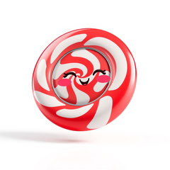

🖼 CandyImage
Terminal image viewer CLI

The chafa-independent terminal image viewer: point candy-image at a PNG/GIF/JPEG and it detects your terminal, picks the best protocol — sixel, kitty, iTerm2, half/quarter blocks, an ANSI character ramp, or the chafa symbol engine — and writes the rendered bytes to stdout. All capability stays in sugar-image; this app is composition only.
Install
composer require sugarcraft/candy-imageQuickstart
candy-image photo.png # auto-detect + render
candy-image --format=half --size=80x24 logo.png
candy-image --dump-detect # why is my image blank?
candy-image --animate clip.gif # sugar-animation playbackWhat's in the box
One-command viewer
candy-image file.png — protocol auto-detection (kitty → iterm2 → sixel → chafa-free text floors) behind a single flag surface.--dump-detectchafa's debugging gold re-expressed over the native stack: env table, TermDb chain + claims, probe capabilities, cell pixels, default fg/bg, DA1 reply, and the resolved auto() choice.
Cell sizing
--size=WxH / --width / --height / --scale=fit|shrink|fill|stretch|none|crop, mapped straight onto sugar-image's Scale enum.Never shells out
--format=chafa is refused by design — this viewer exists precisely to retire the chafa dependency from the image path.Honest flagschafa spellings with no PHP backing here (
--format=chafa, --passthrough=tmux / screen) exit 1 naming what is missing — no silent ignore; --polite is a documented no-op.Testable coreAll argument handling lives in
SugarCraft\CandyImage\Cli — the bin is a two-line shim, and a closure seam lets tests drive the wired Player without a terminal.Exit-code contract0 success, 1 usage error, 2 input/decode failure — pinned in the suite so scripts can branch on it.
Source & demos
- Source on GitHub
- Full README
- Runnable examples
- Detection + render engine: sugarcraft/sugar-image; animation playback: sugarcraft/sugar-animation.
- The CLI surface was sparked by chafa (C); SugarCraft is a native PHP project — this is a composition-only viewer, not a port.
API
| Class | Method | Description |
|---|---|---|
| Cli | main(argv, stdout, stderr, play) | Parse args, detect, render or animate; returns the exit code |
| Cli | viewportCells() | TTY-sized cell box (cols, rows-1) behind a stream_isatty gate, 60×24 fallback |
| Lang | t(key, params) | Localized CLI messages (namespace image) |